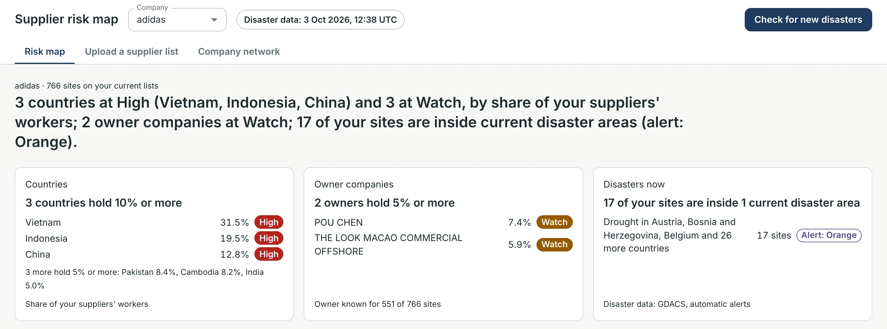
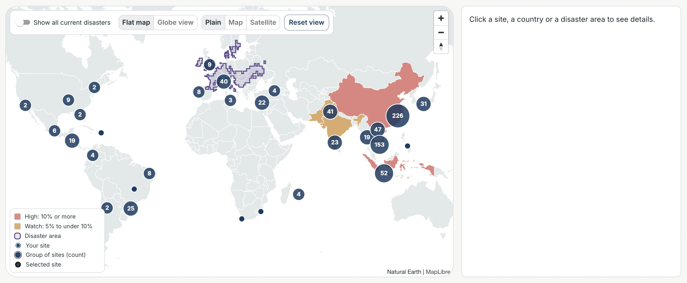
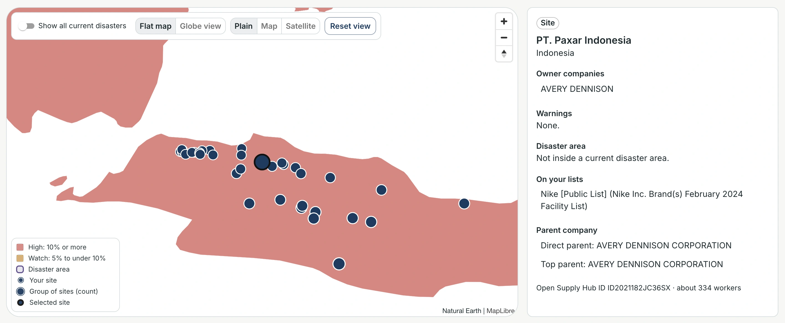
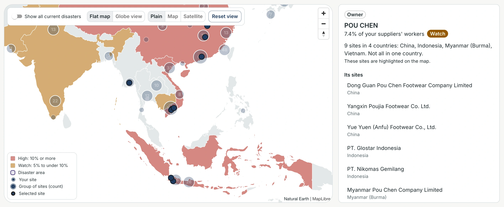
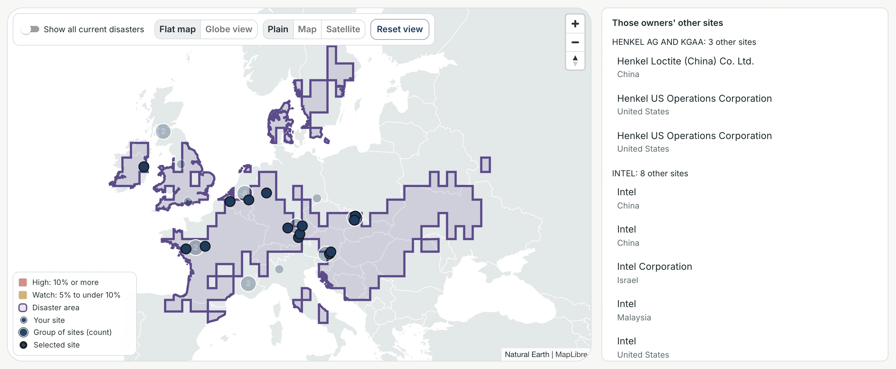
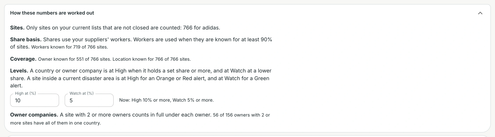
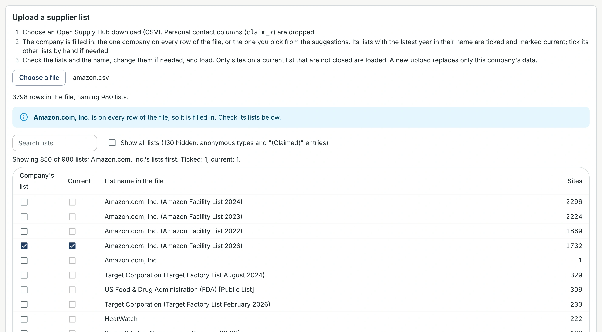
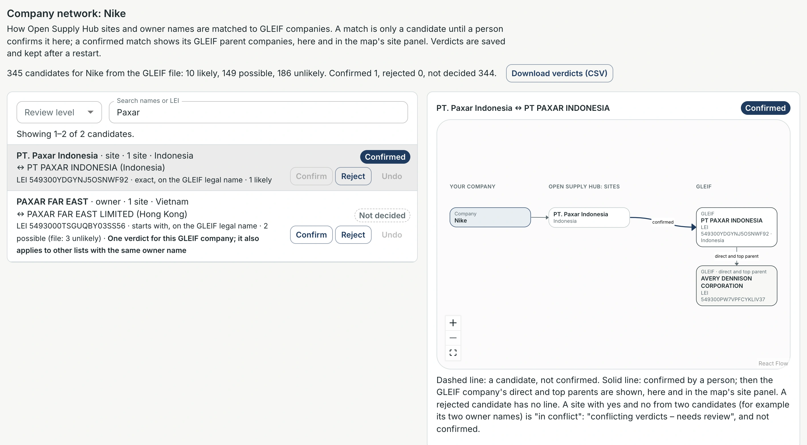
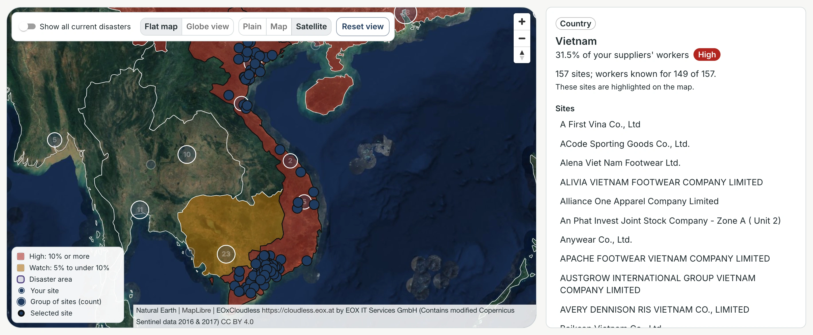

Supplier risk map
What it is: a map that shows where a company's supplier sites are, which owner groups hold many of them, and which sites are inside a current natural disaster.
Who it's for: a company's procurement and supply-chain risk team.
The examples use public supplier lists from adidas, Nike, Apple and Amazon. Screenshots taken on 3 Oct 2026 (UTC). Disaster data is live, so on another day the disasters and counts will differ.
1Overview (adidas)

1Pick a company: every number updates2Time of the last disaster check3The answer in one sentence4Click a card to see its sitesThis is the first screen. At the top you choose a company and see when disaster data was last checked; "Check for new disasters" checks again (not clicked here). One sentence gives the main answer, and three cards break it down: countries, owner companies and current disasters. The tabs switch between the risk map, uploading a supplier list, and reviewing company matches.
2The map (adidas)

1Map controls: disasters, globe, style, reset2226 sites here: click to zoom in3Red = High: 10%+ of workers4Purple = drought: 17 of your sitesEach dot is a supplier site, and a numbered circle is a group of nearby sites. Countries are coloured by their share of the company's suppliers' workers: red for High, amber for Watch. Purple outlines are current disaster areas. Click a site, a country or a disaster to see its details on the right.
3A site (PT. Paxar Indonesia, Nike)

1Who owns this site2Not in a current disaster area3Parent company, confirmed by a person4The selected site on the mapClicking a site shows who owns it, any warnings, whether it is in a disaster area, which supplier list it comes from, and its parent company. The parent, AVERY DENNISON CORPORATION, comes from GLEIF and shows only because a person confirmed the match.
How to get here: Nike → Countries table → Indonesia → PT. Paxar Indonesia.
4An owner company (POU CHEN, adidas)

1Holds 7.4% of workers: Watch29 sites in 4 countries3Its sites, highlighted on the mapClicking an owner company shows how much of the company's supply it holds, and where its sites are. POU CHEN owns 9 of adidas's supplier sites in 4 countries, with 7.4% of the workers: enough for Watch. One owner behind many sites is a hidden dependency.
How to get here: the Owner companies table below the map → POU CHEN.
5A disaster: who is affected, and what else depends on them (Apple)

1Your sites inside this disaster2Who owns those sites3That owner's other sites elsewhere4The disaster area on the mapClicking a disaster shows three things: which of the company's sites are inside it, who owns those sites, and which other sites those same owners have elsewhere. Here the European drought covers a site owned by HENKEL AG AND KGAA, and the panel shows its 3 other Apple supplier sites, in China and the United States, so you can see what else depends on the same owner.
How to get here: Apple → the Disasters now card → the drought → scroll down in the panel.
6How the numbers are worked out (adidas)

1Set the High level (%)2Set the Watch level (%)3Every number says 'X of Y'This section explains every number. A country or owner is High at 10% or more, and Watch at 5% or more; you can change both levels here. Shares use the number of workers at each site, because it is known for most sites (719 of 766).
Code only a changed level updates the country and owner levels, and is not saved; it goes back to 10% and 5% when the page is reopened.
7Adding a supplier list (Amazon)

1File read: 3798 rows, 980 lists2Amazon found and filled in3Its 2026 list is tickedTo add a company, choose its supplier list downloaded from Open Supply Hub. The app reads the file, finds the company (here Amazon, on every row), and ticks its newest list. Personal contact details in the file are dropped. Nothing is added until you check the name and click "Load this company" (not clicked here).
8Confirming a company match (PT. Paxar Indonesia, Nike)

1Confirm or reject a match2Confirmed by a person3Solid line: a confirmed match4Parent company: AVERY DENNISON CORPORATIONThe app suggests matches between supplier sites or owners and companies in GLEIF. A suggestion stays a dashed line until a person confirms it. Once confirmed, the line turns solid and the parent company appears: here, AVERY DENNISON CORPORATION. It then also shows in the site panel (figure 3).
9Map styles (adidas)

1Satellite view: 2016 images2Image credits, always shown3Shading and sites stay on topThere are three map styles: Plain (the default), Map (with place names) and Satellite. Satellite shows satellite images from 2016; the coloured countries, sites and panel stay the same.
Code only if the satellite service does not respond, the map goes back to Plain and shows a short notice.
Good to know
- Disaster alerts are automatic and not checked by people. Confirm before acting.
- Every number shows what it is out of, for example "Owner known for 551 of 766 sites".
- A company match is only a suggestion until a person confirms it (figures 3 and 8).
- Supplier lists have dates: Nike's is from February 2024; Amazon's newest is from 2026.